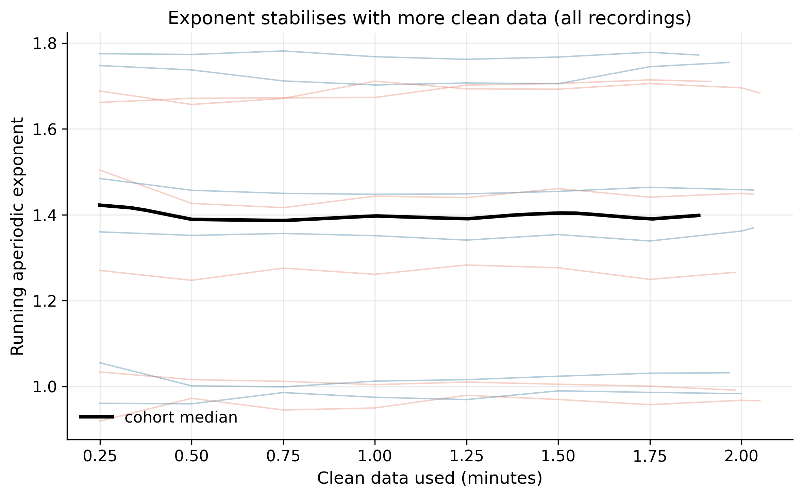

Recordings processed: 12. This report answers the study's core questions: can the Xon headset recover the aperiodic exponent accurately, is it reliable across a person's repeat sessions, does it survive a noisy condition, and how few minutes of clean data are needed.
Distribution of the exponent, fit r², and how much clean data survived QC, overall and by condition.
| group | metric | n | mean | sd | median | iqr | min | max |
|---|---|---|---|---|---|---|---|---|
| all | aperiodic exponent | 12 | 1.3696 | 0.3189 | 1.4088 | 0.6686 | 0.9666 | 1.7721 |
| all | fit r^2 | 12 | 0.9929 | 0.0017 | 0.9933 | 0.0012 | 0.9893 | 0.9951 |
| all | % epochs kept | 12 | 89.8492 | 2.3886 | 89.8500 | 3.0100 | 84.9600 | 92.4800 |
| all | clean minutes | 12 | 1.9917 | 0.0529 | 1.9916 | 0.0666 | 1.8833 | 2.0500 |
| all | across-channel SD | 12 | 0.0358 | 0.0076 | 0.0388 | 0.0110 | 0.0236 | 0.0459 |
| movie | aperiodic exponent | 6 | 1.3443 | 0.3266 | 1.3568 | 0.5647 | 0.9666 | 1.7104 |
| movie | fit r^2 | 6 | 0.9925 | 0.0024 | 0.9931 | 0.0034 | 0.9893 | 0.9951 |
| movie | % epochs kept | 6 | 90.3500 | 2.3487 | 90.6000 | 2.8225 | 86.4700 | 92.4800 |
| movie | clean minutes | 6 | 2.0028 | 0.0521 | 2.0083 | 0.0625 | 1.9167 | 2.0500 |
| movie | across-channel SD | 6 | 0.0334 | 0.0075 | 0.0358 | 0.0124 | 0.0236 | 0.0406 |
| rest | aperiodic exponent | 6 | 1.3949 | 0.3399 | 1.4136 | 0.5641 | 0.9831 | 1.7721 |
| rest | fit r^2 | 6 | 0.9932 | 0.0008 | 0.9935 | 0.0007 | 0.9920 | 0.9942 |
| rest | % epochs kept | 6 | 89.3483 | 2.5365 | 89.4750 | 2.6350 | 84.9600 | 91.7300 |
| rest | clean minutes | 6 | 1.9806 | 0.0562 | 1.9833 | 0.0583 | 1.8833 | 2.0333 |
| rest | across-channel SD | 6 | 0.0381 | 0.0076 | 0.0410 | 0.0097 | 0.0264 | 0.0459 |
ICC(2,1) is the standard test-retest statistic (>0.75 good, >0.9 excellent).
| condition | n_participants_complete | n_sessions | ICC(2,1) | pearson_r | pearson_p | mean_abs_session_diff | note |
|---|---|---|---|---|---|---|---|
| movie | 3 | 2 | 0.9565 | 0.9570 | 0.1873 | 0.0778 | excellent reliability |
| rest | 3 | 2 | 0.9880 | 0.9964 | 0.0542 | 0.0512 | excellent reliability |

Does the exponent hold up when the participant is watching a movie (more movement/noise) versus resting? A paired contrast within each participant-session.
| quiet | rest |
| noisy | movie |
| n_pairs | 6 |
| quiet_mean | 1.3949 |
| noisy_mean | 1.3443 |
| mean_diff_noisy_minus_quiet | -0.0506 |
| cohen_dz | -1.3284 |
| paired_t | -3.2538 |
| paired_t_p | 0.0226 |
| wilcoxon_p | 0.0312 |


| region | n | mean | sd | median | iqr | min | max |
|---|---|---|---|---|---|---|---|
| frontal | 12 | 1.3809 | 0.3307 | 1.4023 | 0.7323 | 0.9679 | 1.7977 |
| central | 12 | 1.3716 | 0.3164 | 1.4060 | 0.6418 | 0.9683 | 1.7745 |
| parietal | 12 | 1.3582 | 0.3139 | 1.3999 | 0.6439 | 0.9295 | 1.7960 |
| test | Friedman |
| regions | ['frontal', 'central', 'parietal'] |
| n_recordings | 12 |
| statistic | 1.5 |
| p_value | 0.4724 |

For each recording we track the running exponent as clean data accumulates and record when it settles within tolerance of the full-recording value.
| n_recordings | 12 |
| n_converged | 12 |
| pct_converged | 100.0 |
| minutes_to_stability_n | 12 |
| minutes_to_stability_mean | 0.25 |
| minutes_to_stability_sd | 0.0 |
| minutes_to_stability_median | 0.25 |
| minutes_to_stability_iqr | 0.0 |
| minutes_to_stability_min | 0.25 |
| minutes_to_stability_max | 0.25 |

Per-recording QC reports (qc_report_<id>.html) and the wide master_everything.csv sit alongside this file for drill-down.